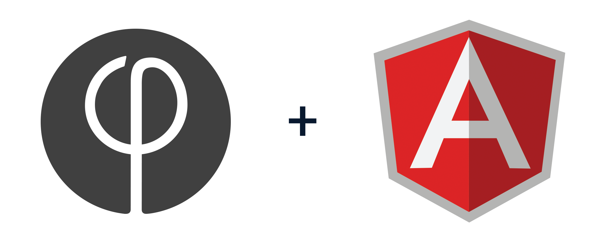
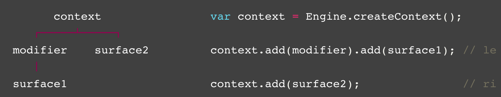

1st Famo.us meetup Sydney
2014-09-16
An intro to Famous Angular

Presented by
Alex @grabthecode
Mobile stairway to heaven
- IF you keep the DOM lean
- IF you use CSS3d transformation
- IF you avoid deeply nested CSS selectors (using BEM methodology for example)
- IF you avoid box-shadow
- What else ?
Hell hell hell
Jesus Famous, save us
HTML5DevConf - April 1-2, 2013
Integration with other libraries ?
Stick with Angular ? Yes thanks.
- Data binding
- Declarative
- End to end testing
Angular announcements - August 2014
F/A, the unexpected child
Thankfully Famo.us is open source, and Zack Brown got it all
F/A Basics
| HTML | Famous | F/A |
| body tag | Engine.context() | fa-app |
| CSS animation | context.add(modifier) | fa-modifier |
| div | context.add(surface) | fa-surface |
Demos
Early project
Famous/Angular
I see F/A as a bridge 2D to 3D - Oculus Rift are coming
Resources
Important: Famo.us, not unlike Angular, is backed by clever people, and a huge community.
References
{over: 'Thank you'}